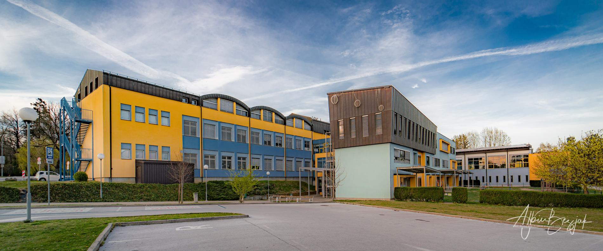

Vir slike: https://www.os-ljudskivrtptuj.si/wp-content/uploads/2022/10/DSC05801.jpg
Ulica: Gregorčičeva ulica 14
Mesto: Ptuj
Poštna številka: 2250
Leto izgradnje: 1985
Površina: 2674 m2
Namembnost: šola
Projektant: Zoja S.